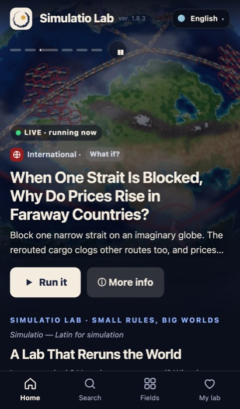
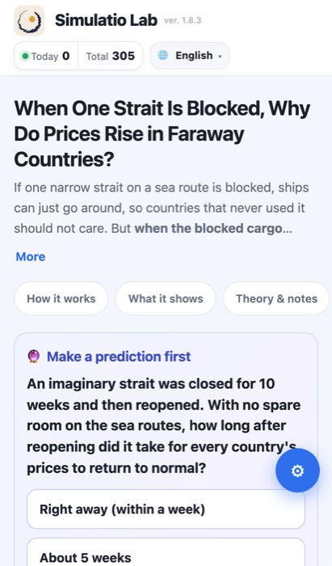
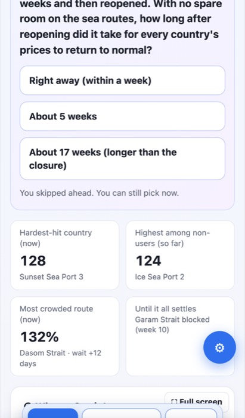

simulatiolab.com 모바일 UX 진단
쇼츠 시청자의 이동 경로
빨간 칸이 이탈이 생기는 곳. 유튜브는 쇼츠 설명란·댓글 링크를 누를 수 없게 해서, 끝 화면의 주소 문구와 채널 링크가 사실상 유일한 길이다.
잘 되어 있는 것
진단과 개선 (중요한 순서)
쇼츠에서 오는 길이 막힘
쇼츠 설명란 링크를 누를 수 없어 메인으로 들어오는데, 메인에 "방금 본 쇼츠" 입구가 없다.
simulatiolab.com/strait 같은 짧은 주소를 끝 화면에 표시실험 페이지에서 시뮬레이션이 바로 안 보임
첫 화면은 제목·설명·탭·퀴즈. 건너뛰기를 눌러도 시뮬레이션은 960px 아래에 있다(보이는 화면은 664px까지).
읽는 중 화면 흔들림
방문자 수 상자가 1.1~1.2초 늦게 나타나며 상단 바가 두 줄로 커지고 본문이 20px 밀렸다 (CLS 버스 몰림 0.91, 재능 vs 운·반딧불이 0.38).
메인 페이지가 무거움
6.2MB · 요청 127개. 섬네일 JPG 130~205KB씩(합 5.4MB), 3D 도구 655KB, 영어 번역 파일 276KB를 3번 받음. 시청자 2~4위 인도·필리핀·인도네시아는 모바일 회선이 느린 곳이 많다.
작은 버튼
언어 버튼 94×32, "More" 39×31, "Skip and see it now" 146×29, 첫 화면 넘김 점 18×4 (애플 권장 44px 이상).
"Today 0"이 신뢰를 깎음
실험 페이지 맨 위 "Today 0 · Total 305"(한국 시간). 해외 방문자에게 빈 사이트처럼 보인다.
공유·구독으로 이어지는 장치 없음
18–34세 남성 시청자는 맞혔다/틀렸다를 자랑하고 싶어 한다.
이메일 주소가 스팸 봇에 노출
90개 페이지 하단에 메일 주소가 링크로 그대로 있었다. 최근 스팸 메일의 원인일 수 있다.
측정 상세 (개선 전 → 후)
| 페이지 | 무게 | LCP | CLS 전 | CLS 후 | 작은 터치 전 | 후 | 시뮬레이션 위치 |
|---|---|---|---|---|---|---|---|
| 메인 | 6,237KB | 1.23초 | 0 | 0.01 | 32 | 29 | – |
| 막힌 바닷길 | 1,041KB | 0.94초 | 0~0.38 | 0 | 12 | 8 | 1,443px |
| 브라에스 역설 | 1,196KB | 0.91초 | 0 | 0 | 11 | 7 | 1,656px |
| 생존자 편향 | 141KB | 0.52초 | 0 | 0 | 10 | 6 | 1,302px |
| 재능 vs 운 | 198KB | 0.77초 | 0.38 | 0 | 12 | 8 | 1,243px |
| 버스 몰림 | 478KB | 1.16초 | 0.91 | 0 | 11 | 7 | 1,253px |
| 친구 역설 | 160KB | 1.00초 | 0 | 0 | 10 | 6 | 1,228px |
| 반딧불이 | 470KB | 0.82초 | 0.38 | 0 | 9 | 6 | 743px |
CLS는 방문자 수 서비스가 늦게 응답할 때만 생겨서 측정마다 달랐다(0~0.91). 남은 "작은 터치"는 대부분 슬라이더 이름표(320×25)로, 슬라이더 자체는 44px라 실제 조작에는 문제없다. 시뮬레이션 위치는 페이지 맨 위에서 그림까지 거리(보이는 화면 664px).
화면 (개선 전 측정 당시)



다음 단계
| 시기 | 할 일 | 기대 효과 |
|---|---|---|
| 완료 11/1 | ③ 흔들림 · ⑤ 44px 버튼 · ⑥ Today 0 숨김 · ⑧ 이메일 가리기 (ver. 1.8.4) | 잘못 누르기 감소, 신뢰도, 스팸 감소 |
| 이번 주 | ② 시뮬레이션을 첫 화면 가까이 · ④ 이미지 가볍게 | "직접 돌려 보기" 도달률, 느린 회선 국가 이탈 감소 |
| 다음 주 | ① 쇼츠 시청자 입구 + 짧은 주소 · ⑦ 결과 공유·구독 버튼 | 쇼츠 → 사이트 → 구독으로 이어지는 흐름 |